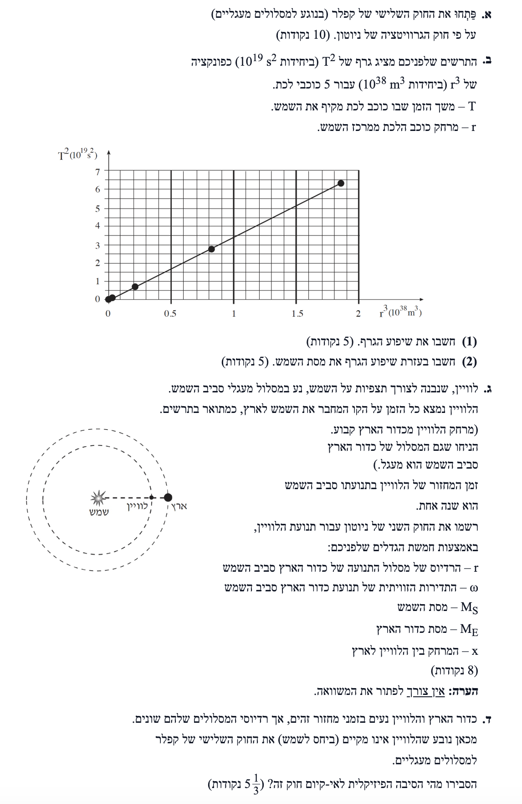
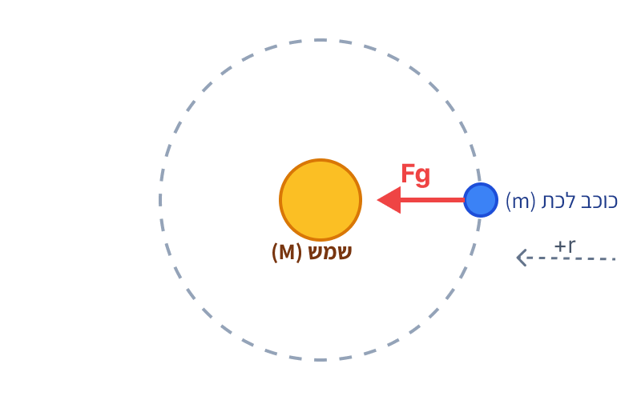
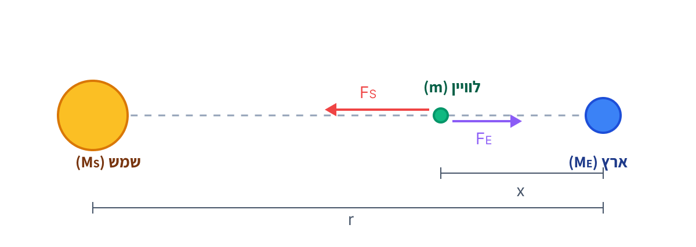

פתרון מודרך, מוסבר וצעד-אחר-צעד המותאם לתלמידי 5 יח"ל


הכוח היחיד הפועל על כוכב הלכת הוא כוח הכבידה של השמש, ולכן הוא זה שמהווה את הכוח הצנטריפטלי (הכוח הרדיאלי שקול). נבחר ציר רדיאלי החיובי לכיוון מרכז המעגל (לכיוון השמש).
נרשום את החוק השני של ניוטון עבור כוכב הלכת בציר הרדיאלי:
תחילה, נפתח ביטוי עבור התאוצה הרדיאלית \( a_r \) כתלות בזמן המחזור \( T \). נציב את הנוסחה לתדירות זוויתית \( \omega = \frac{2\pi}{T} \) לתוך הנוסחה \( a_r = \omega^2 r \):
כעת נציב את ביטוי כוח הכבידה במקום \( \Sigma F_r \), ואת הביטוי שקיבלנו עבור התאוצה הרדיאלית למשוואת החוק השני של ניוטון:
אנו רואים כי המסה של כוכב הלכת, \( m \), מופיעה בשני צידי המשוואה. נצמצם אותה:
כעת, נסדר את המשוואה כדי לבודד את ריבוע זמן המחזור \( T^2 \), על ידי כפל בהצלבה או העברת אגפים:
מכיוון שהביטוי בסוגריים הוא קבוע (מורכב ממסת הגוף המרכזי \( M \) וקבוע הכבידה \( G \)), נסיק כי היחס \( \frac{T^2}{r^3} \) הוא קבוע לכל גוף המקיף את אותו גוף מרכזי. לכן, עבור שני כוכבי לכת (1 ו-2) המקיפים את השמש נרשום:
על ידי סידור מחדש של המשוואה (העברת אגפים), נגיע אל הצורה המדויקת של החוק השלישי של קפלר כפי שמופיעה בדף הנוסחאות:
מציאת שיפוע גרף ליניארי מתבצעת על ידי בחירת שתי נקודות על הקו הישר וחישוב היחס \( m = \frac{\Delta y}{\Delta x} \). הגרף עובר בראשית הצירים (כפי שראינו בפיתוח בסעיף א', כש- \( r=0 \) אז \( T=0 \)).
Point 1: \( (0, 0) \)
נחפש נקודה נוספת מהגרף. נבחר את הנקודה הבאה:
Point 2: \( (1.85 \cdot 10^{38}, 6.3 \cdot 10^{19}) \)
נציב בביטוי לשיפוע:
כאשר פיתחנו את החוק השלישי של קפלר בסעיף א', קיבלנו את המשוואה הבאה המקשרת בין משתני הצירים (משוואה מהצורה \( y = a \cdot x \)):
ניתן לראות כי הביטוי שבתוך הסוגריים אשר כופל את משתנה ציר ה-x (\( r^3 \)), הוא למעשה השיפוע התיאורטי של הגרף שלנו. לכן נשווה את הביטוי התיאורטי לערך המספרי של השיפוע שחישבנו:
נבודד את מסת השמש \( M_S \):
הלוויין (מסה \( m \)) נמצא במרחק \( x \) מכדור הארץ. כיוון שמרחק כדור הארץ מהשמש הוא \( r \), מרחק הלוויין מהשמש הוא \( (r - x) \). נסמן ציר חיובי לכיוון מרכז המעגל (לכיוון השמש).

על הלוויין פועלים שני כוחות כבידה מנוגדים: כוח המשיכה של השמש \( F_S \) המכוון אל מרכז המסלול המעגלי, וכוח המשיכה של כדור הארץ \( F_E \) המכוון החוצה מהמרכז.
נרשום את כוחות אלו לפי חוק הכבידה (נסמן את מסת הלוויין ב- \( m \)):
התאוצה הרדיאלית של הלוויין תלויה ברדיוס המסלול שלו סביב השמש, שהוא המרחק \( (r - x) \). נבטא אותה בעזרת התדירות הזוויתית \( \omega \):
נציב את כל אלו בחוק השני של ניוטון עבור ציר רדיאלי חיובי כלפי השמש (\( \Sigma F_R = m \cdot a_R \)):
כפי שניתן לראות, מסת הלוויין \( m \) מופיעה בכל האיברים במשוואה. מכיוון שהיא אינה אחת מחמשת הגדלים הנדרשים בשאלה, נחלק את שני צידי המשוואה ב- \( m \) ונצמצם אותה. נקבל את המשוואה הסופית:
בסעיף א', כאשר פיתחנו את החוק השלישי של קפלר, הסתמכנו על הנחת יסוד קריטית: הכוח היחיד הפועל על הגוף המקיף הוא כוח הכבידה של הגוף המרכזי (השמש).
עבור הלוויין הנתון בשאלה, מצב זה אינו מתקיים. כפי שראינו בסעיף ג', פועלים עליו שני כוחות כבידה משמעותיים: משיכה מצד השמש ומשיכה נגדית מצד כדור הארץ. מכיוון שהכוח השקול הפועל עליו אינו פשוט כוח כבידה בודד כפי שהוצב בפיתוח המקורי, אלא שילוב מורכב יותר התלוי גם במסת כדור הארץ ובמרחקו ממנו, הפיתוח המתמטי שהוביל לנוסחת קפלר (המתארת תנועה תחת כוח מרכזי יחיד) אינו תקף לגביו.